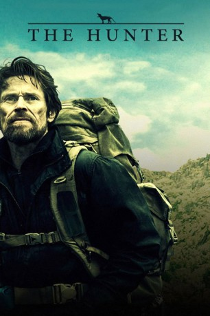

#591 The Hunter
 
 IMDB-Wertung: 6.8 / 10
IMDB-Wertung: 6.8 / 10  Metascore: 63
Metascore: 63 
Der Söldner Martin David wird von einem geheimnisvollen Biotech-Unternehmen von Europa nach Down Under geschickt, um auf Tasmanien ein Exemplar des als ausgestorben geltenden Tasmanischen Tigers zu erlegen. Dort angekommen sieht sich der weit herumgereiste Martin mit einer ihm völlig fremden Welt konfrontiert, die so manch unliebsame Überraschung für ihn bereit hält.
Jahr: 2011
Dauer: 102 Minuten
FSK: 12
Land: Australien Studio: Ascot Elite Entertainment GroupTonspuren: DTS - ,
Untertitel: Deutsch,
Auflösung: 1080p (1920x816) Größe: 7137 MB
Genre: Abenteuer, Drama, Thriller
Regisseur: Daniel Nettheim
Drehbuch: Alice Addison, Wain Fimeri, Daniel Nettheim, Julia Leigh
Soundtrack: Andrew Lancaster, Michael Lira, Matteo Zingales
Darsteller:
Datei: X:\2011(G-M)\Hunter, The (2011, FSK12, 1920x816).mkv seit 11.03.2015
Festplatte: HD 2011(G-Z)
 Es gibt insgesamt 100 Filme in der Gruppe '2011(G-M)'
Es gibt insgesamt 100 Filme in der Gruppe '2011(G-M)'